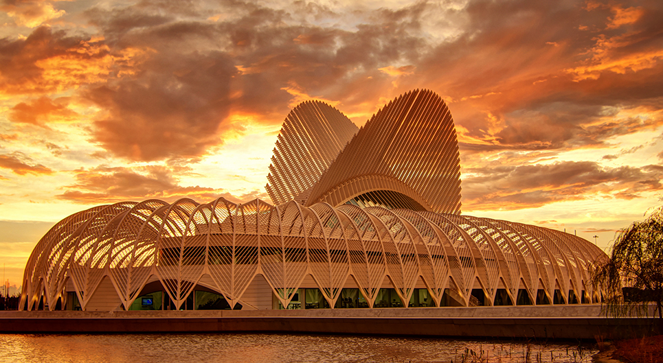

Campus Visit
See for yourself
If you haven’t set foot on campus yet, you’re in for an amazing experience.
And if you’ve been here already, you know what we mean.
Your campus visit will include an up-close tour of our iconic Innovation, Science and Technology (IST) Building, designed by world-renowned architect Dr. Santiago Calatrava. The IST Building is where you’ll find some of the most advanced technology spaces in the world, including the RAD MakerSpace 3D printing Lab, the Entrepreneurship Lab, the Visualization and Technology Collaboration Lab, the Supercomputer Lab and more.
Come visit – and imagine yourself collaborating, innovating, making and inventing on a campus like no other.
Visit our website to schedule a campus visit or contact the Admissions Office at 1-800-585-POLY.
Go beyond the campus
While you’re here, explore a little.
Lakeland is a vibrant community at the heart of Florida’s I-4 High Tech Corridor, where an ever-growing cluster of innovative companies and entrepreneurs are located. It’s also home to a wide variety of entertainment and activities to suit just about everyone’s interests. Even walking around the quaint downtown is a one-of-a-kind experience. Check out some of the fun below and you’ll see why Florida Poly students can play just as hard as they work.
- 40 parks and countless hiking trails
- Bike rallies and fun runs
- Boating and sailing
- An incredible restaurant scene
- Farmers Market
- Annual Pig Fest BBQ
- Monthly food truck rallies
- Art walks
- Dozens of live music venues
- Walking tours
World-class destinations right nearby
Florida Poly is located close to some of the world’s most popular destinations.
- Under 1 hour from Orlando – Home to Walk Disney World, Universal Studios, and SeaWorld
- Just 40 minutes from Tampa and St. Petersburg – Enjoy Busch Gardens amusement park, cheer on Tampa Bay’s professional sports teams, and see national concert acts and theater tours along the way
- About 4 hours from Miami – Take in world-famous Miami Beach, catch a Miami Dolphins, Florida Panthers, or Miami Heat game, and browse some of the best shopping areas on the east coast!
- Hit some of Florida’s top beaches - Clearwater Beach (1 hour), Cocoa Beach (2 hours), Daytona Beach (2 hours), St. Pete Beach (1 hour), Key West (7 hours)
BE THE NEXT on campus!
Schedule your campus visit today.